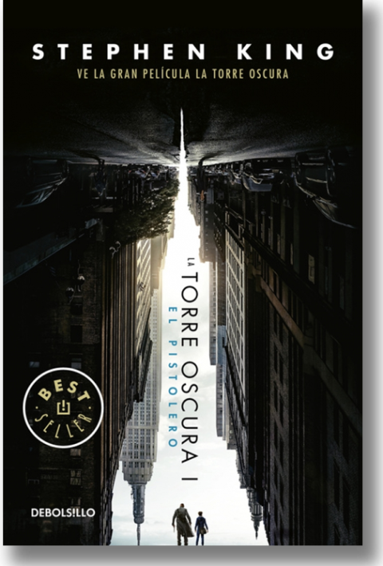
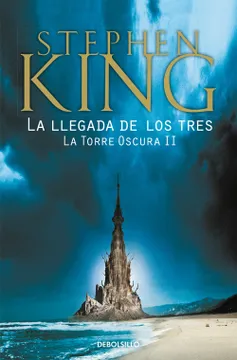
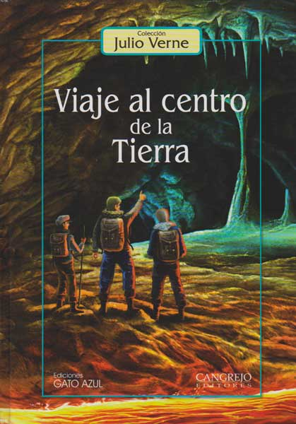
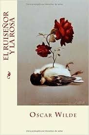
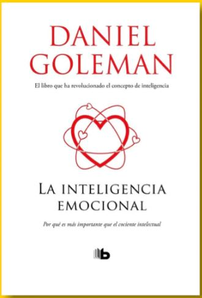
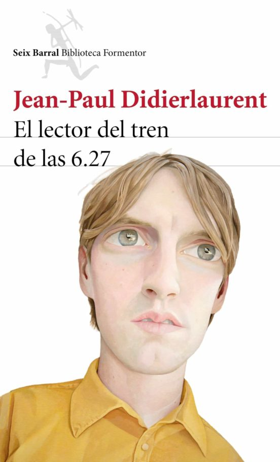

Mis pasatiemposUno de mis pasatiempos favoritos es la lectura, a continuación describo el tema y algunos de los libros
que he leído hasta el momento:
Género |
Subgénero |
Autor |
Nombre |
Foto |
Reseña |
|---|---|---|---|---|---|
Novela |
Fantasía, Terror |
Stephen King |
La torre Oscura 1: El pistolero |
 | Roland de Gilead, uno de los héroes más enigmáticos del autor, debe perseguir al Hombre Negro por el
desierto para que le revele los secretos de la Torre Oscura, un edificio mítico que se encuentra en
el nexo de todos los universos. Tras correr innumerables peligros, "el pistolero" comienza a formar
el equipo con el que viajará por distintos mundos. |
Novela |
Fantasía, Terror |
Stephen King |
La torre Oscura 2: La llegada de los tres |
 | Después de enfrentarse con el hombre de negro al final de El pistolero, Roland se despierta
febril y debilitado en una playa. Al caer la noche le atacan unos seres monstruosos que salen
del mar. Para eludirlos, Roland puede huir de la playa por tres salidas, tres puertas. Todas le
llevarán a Nueva York, pero en tres momentos distintos; además, al otro lado de cada una de
ellas Roland tendrá que atraer a una persona. Necesita a estas tres personas para seguir
adelante en su búsqueda de la Torre Oscura: en el año 1987 encuentra a Eddie Dean, heroinómano
desesperado; en 1964 a Odetta Holmes, la Dama de las Sombras, heredera afroamericana que perdió
sus piernas en un accidente en el metro; finalmente, en 1977, da con Jack Mort, la propia
muerte. ¿Serán ellos los que formarán su ka-tet? |
Novela |
Ficción, Aventura |
Julio Verne |
Viaje al centro de la tierra |
 | El obstinado profesor Lidenbrock descifra un criptograma del alquimista Arne Saknussemm y llega a la
conclusión de que es posible viajar al centro de la Tierra, Por el cráter de un volcán apagado desciende junto a
su escéptico sobrino Axel, y Hans Bjelke, un imperturbable guía. Su esfuerzo y su coraje son tan grandes como la
perplejidad que sienten entre abismos, mares de lava, rebaños de mastodontes o vegetación antediluviana. |
Cuento |
Literatura infantil |
Oscar Wilde |
El ruiseñor y la rosa |
 | Un ruiseñor oye los lamentos de un estudiante causados por la negativa de la hija de su
profesor de bailar con él a menos que le traiga una rosa roja. El ruiseñor visita todos los rosales del
jardín, y uno de ellos le dice que hay una manera de producir una rosa roja, pero solo si el ruiseñor está
dispuesto a cantar su canción más dulce durante toda la noche y sacrificar su vida para crearla. Viendo las
lágrimas del estudiante, el ruiseñor lleva a cabo el ritual, y clava su corazón a una espina para que su sangre
pueda dar color a la rosa. A la mañana siguiente, el estudiante está contento, pues tiene la rosa roja, pero la
hija del profesor le rechaza de nuevo debido a que otro hombre la ha obsequiado con joyas «y ya se sabe que las
joyas cuestan más que las flores», le dice. El estudiante lanza con ira la rosa a la calle, vuelve a sus estudios,
y decide no creer en el amor verdadero nunca más. |
Autoayuda |
Literatura autoayuda |
Daniel Goleman |
La inteligencia emocional |
 | La inteligencia emocional es la capacidad de reconocer las emociones tanto propias como ajenas y de
gestionar nuestra respuesta ante ellas. La podemos definir como el conjunto de habilidades que permiten una mayor
adaptabilidad de la persona ante los cambios. |
Novela |
Novela literaria |
Daniel Goleman |
La inteligencia emocional |
 | Guibrando Viñol no es ni guapo ni feo, ni gordo ni flaco. Su trabajo consiste en destruir lo que más ama:
es el encargado de supervisar la Cosa, la abominable máquina que tritura los libros que ya nadie quiere leer. Al final
de la jornada, Guibrando saca de la entrañas del monstruo las pocas páginas que han sobrevivido a la carnicería. Cada
mañana, en el tren de las 6.27, se dedica a leerlas en voz alta para deleite de los pasajeros habituales. Un día descubre
por casualidad una pieza de literatura atípica que le cambiará la vida. La amistad une a un grupo de personajes
aparentemente anodinos, probables compañeros invisibles de nuestros viajes cotidianos en tren, que esconden mundos
extraordinarios donde todo es posible: un vigilante de seguridad que habla en verso, una princesa cuyo palacio es un aseo
público, un mutilado que busca sus piernas. En una mezcla insólita de humor negro y dulzura, celebramos con ellos el triunfo
de los incomprendidos. > |